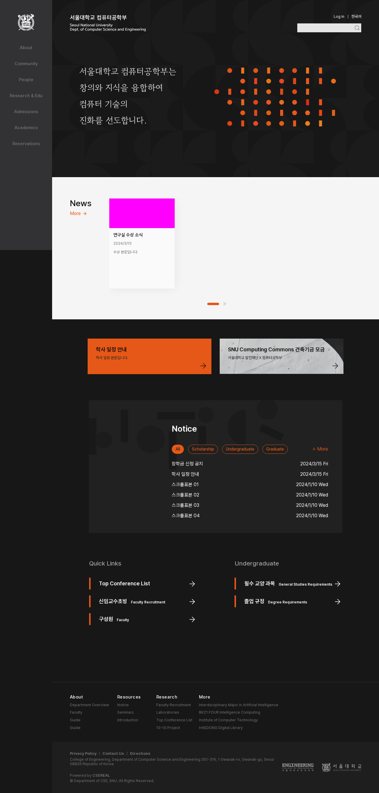
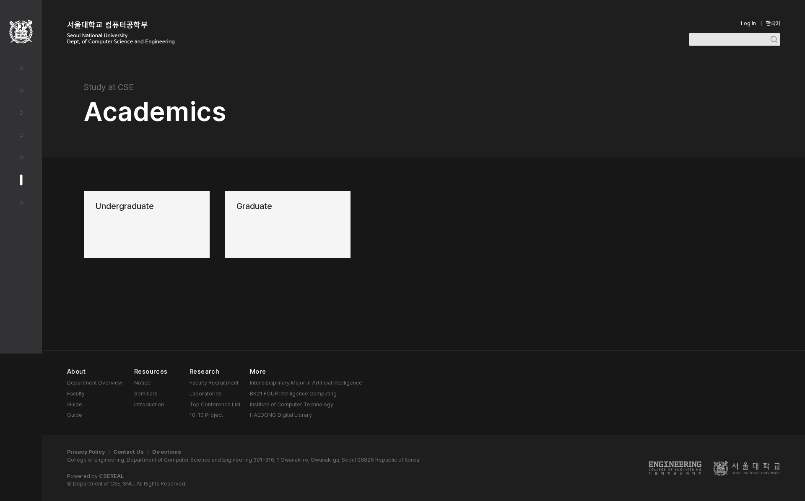
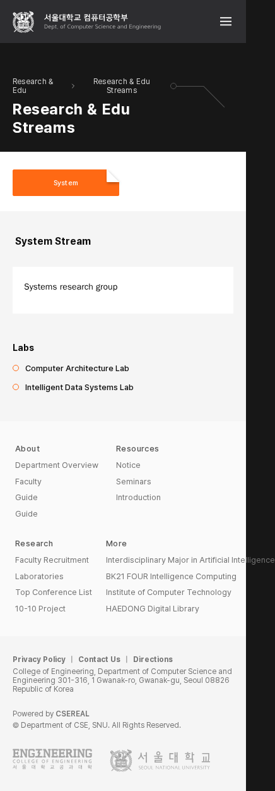
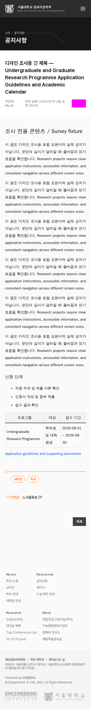
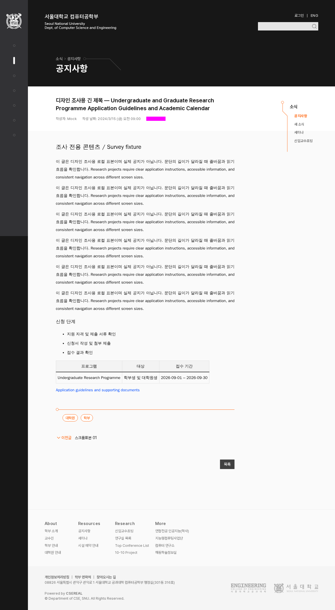
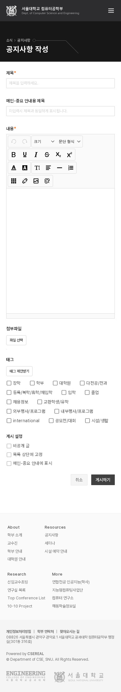
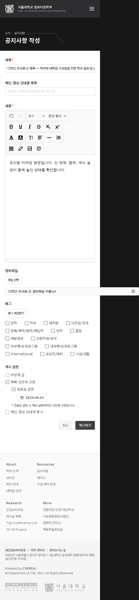
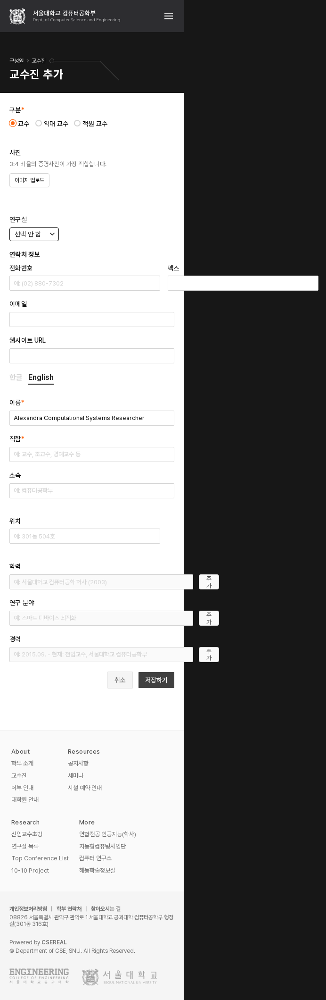

무엇을 남기고,
어디를 바꿀까?
초기 세 질문 결정 · 역할과 세부 규칙은 다음 검토기존의 시각적 특징은 살리고, 읽기와 조작의 문제는 해결한다.
기존 특징의 보존과 읽기·조작 문제를 해결하기 위한 변경 범위는 사용자와 결정했다. 공개 기능은 모바일을 지원하고, 행정실 편집·관리는 데스크톱 중심으로 설계한다. 새 색·크기·컴포넌트 형태는 이후 실제 적용 비교로 정한다.
모든 이미지는 변경 전 캡처다. 미리보기는 축소되어 있으며 안쪽으로 스크롤하거나 원본을 열어 볼 수 있다. 캡처는 전체 문서여서 실제 뷰포트보다 넓을 수 있다. 이 검토 페이지의 서체·색·배치는 사이트 디자인 제안이 아니다.
남기고 싶은 특징
어두운 큰 면, 주황, 원과 선, 접힌 모서리가 현재 사이트의 인상을 만든다. 이 특징을 남기는 방향으로 사용자와 결정했다. 구체적인 역할과 적용 규칙은 이어서 정한다.
{kind=link}

큰 어두운 면, 원과 막대, 별도 서체의 슬로건. 자홍색 뉴스 영역은 테스트 마스크다.
이미지 원본 열기 ↗{kind=link}

큰 제목과 넓은 탐색 카드. 일반 본문과 같은 밀도로 맞출 필요가 있는지 검토한다.
이미지 원본 열기 ↗{kind=link}

선택 표시와 접힌 모서리. 모양은 보존하고 선택 의미를 어떻게 명확히 할지 검토한다.
이미지 원본 열기 ↗J-01 · 특징 보존 결정. 어두운 큰 면·주황·원과 선·접힌 모서리를 유지한다. 결정 근거와 범위. 이미지는 기존 화면이다.
읽기와 배치를 위해 바뀔 부분
서체 연결, 작은 글자의 대비, 화면 넘침은 해결할 문제다. 기존 인상과 정보 구조를 유지하면서 색·글줄·간격·중간 폭 배치를 조정할 수 있는 것으로 사용자와 결정했다.
{kind=link}

이 표본은 문서 폭이 화면에 맞는다. 현재 본문 서체가 의도한 웹폰트인지는 별도의 실측으로 확인해야 한다.
이미지 원본 열기 ↗{kind=link}

화면은 768px인데 문서가 1200px로 넓어진다. 오른쪽 내비를 포함한 중간 폭 배치의 검토가 필요하다.
이미지 원본 열기 ↗J-02 · 읽기·조작 문제를 해결하기 위한 세부 시각 변경 허용. 결정 근거와 범위. 정확한 새 색과 크기는 적용 전에 화면으로 비교해 결정한다.
Linux 표본은 WenQuanYi Zen Hei. UI의 Pretendard Variable과 다르다. 서체를 정한 후 줄바꿈과 높이를 다시 봐야 한다.
작은 활성 버튼·태그의 대비 문제다. 장식의 주황을 유지하면서 정보/행동 색의 조합을 검토한다.
공지 제목은 초점을 받아도 선·테두리·배경 변화가 없었다. 사진만으로 알 수 없는 상태는 실제 조작으로 확인했다.
측정 방법·기준·한계 · 실측 원자료 · 대비 계산
작은 화면에서 가능한 작업
공개 기능은 모바일을 지원하고, 편집·관리는 행정실의 데스크톱 작업에 맞춰 설계한다. 사용자는 모바일 편집·관리 수요가 없었다고 설명했다. 아래 모바일 폼 자료는 관찰 기록으로 남기며 모바일 전용 최적화는 v1 필수 개선 대상에서 제외한다.
{kind=link}

빈 폼은 화면 폭에 맞지만 첨부 후에는 결과가 달라진다. 편집 폼은 데스크톱에서 빈 상태와 값이 채워진 상태를 모두 검토한다.
이미지 원본 열기 ↗{kind=link}

모바일에서 첨부 후 문서 폭이 542px이 된 관찰은 유지한다. 모바일 전용 개선은 후순위로 두고 데스크톱의 파일명과 삭제 조작을 검토한다.
이미지 원본 열기 ↗{kind=link}

모바일 표본의 문서 폭은 692px이다. 행정실 작업은 데스크톱 중심으로 검증하며 최소 지원 폭은 레이아웃 비교에서 정한다.
이미지 원본 열기 ↗J-03 · 공개 기능은 모바일 지원, 편집·관리는 데스크톱 중심으로 결정. 일반 이용자의 예약은 모바일 범위에 남는다. 결정 근거와 범위.
이번에 확정하지 않은 것과 검증 한계
새 팔레트, 타이포 단계, 아이콘 크기, 컴포넌트 모양, 문구 가이드는 아직 미결정이다. 그림의 접합 보정·달력·작성자 HTML 같은 고유한 조건도 별도로 검토한다.
배열 체크박스의 색, 드롭다운 키보드 동작, 처리 중·실패 상태 등에는 추가 재현이 필요하다. 기존 시각 회귀 3개 실패도 해결된 것이 아니다. 자세한 범위는 분류표의 U 항목에 있다.